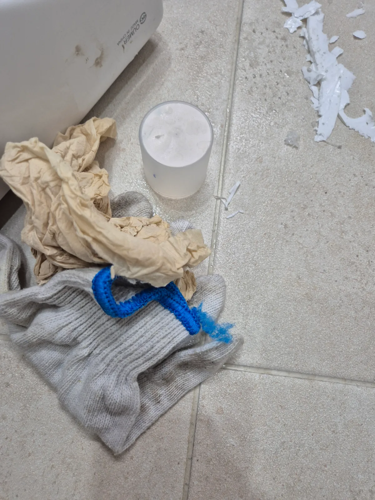

변기막힘 증상은 원인 구간부터 확인합니다
물이 천천히 내려가거나 수위가 차오르는 막힘, 물이 안 내려가는 증상, 이물질 막힘, 반복 막힘, 변기 역류 등 같은 변기막힘 증상이라도 변기·배수구 내부, 연결 배관, 오수관 또는 공용배관처럼 원인이 발생한 위치가 다를 수 있습니다. 신라건축설비는 증상만 보고 작업을 정하지 않고 현장 상태를 확인한 뒤 필요한 작업 범위와 비용 조건을 먼저 안내합니다.
실제 현장에서 확인되는 주요 원인: 물티슈·청소포·음식물·플라스틱 같은 생활 이물질, 변기 트랩 걸림, 하부 오수관 막힘
주요 점검·작업: 석션·에어건·내시경 점검·변기 탈거와 오수관 확인
변기막힘 원인부터 변기뚫는업체 선택까지
변기막힘 원인·변기역류·변기 물 안내려감·변기 이물질·반복되는 변기막힘·변기 탈거·오수관 막힘처럼 검색하는 상황은 표현은 달라도 같은 배수 문제에서 시작되는 경우가 많습니다. 신라건축설비는 단순 관통 여부만 보지 않고 증상, 막힘 위치, 이물질 여부와 배관 상태를 함께 확인해 필요한 작업을 판단합니다.
변기뚫는업체 선택 전 실제 작업사례를 확인하세요
광고 문구만이 아니라 실제로 어떤 증상을 어떤 장비로 진단하고 해결했는지가 중요합니다. 현재 신라건축설비 홈페이지에는 변기막힘 실제 현장사례 36건이 공개되어 있으며 지역, 원인, 작업 과정과 결과를 확인할 수 있습니다.
지역별 변기막힘·변기뚫는업체 실제 출동 기록
최근 변기막힘 해결사례

시흥시 하상동 변기막힘, 꿀렁거림 원인은 오수관! 탈거 후 샤프트 해결
시흥시 하상동 아파트에서 약 일주일 전부터 변기를 사용하지 않아도 물이 꿀렁거리는 증상이 반복돼 오수관 문제를 예상했고, 변기 탈거 후 정체된 오수와 검고 찐득한 오염물을 확인해 RIDGID FlexShaft와 Milwaukee AirSnake를 이용해 당일 해결했습니다.

동대문구 이문동 변기막힘, 석션으로 안 빠진 이물질 변기 탈거·에어건으로 해결
이문동 변기막힘 현장에서 석션 작업만으로 해결되지 않는 막힘을 확인하고, 변기를 탈거한 뒤 전문 에어건 작업으로 내부 이물질을 제거해 정상적인 배수 상태를 확보했습니다.

송파구 석촌동 변기막힘, 오수관까지 추적해 내시경 진단·고압세척
송파구 석촌동 변기막힘 증상을 단순 변기 문제로 끝내지 않고 실내 관통작업과 배관 내시경검사로 배관 상태를 추적한 뒤 외부 오수관까지 점검해 고압세척으로 대응한 현장입니다.

용인 수지구 풍덕천동 변기막힘, 석션 후 변기 탈거까지 단계별 작업
용인시 수지구 풍덕천동 변기막힘 현장에서 석션 작업부터 진행한 뒤 증상에 맞춰 변기를 탈거하고 하부 오수배관까지 단계적으로 점검·작업한 사례입니다.

안양시 만안구 안양동 변기막힘, 반복 막힘에 변기탈거·에어건으로 이물질 제거
변기가 자주 막혀 불편을 겪던 고객님이 신라건축설비의 블로그와 현장사례를 보고 믿고 연락해주셨으며, 변기를 탈거해 Milwaukee AirSnake 에어건으로 물티슈·청소포 계열로 보이는 이물질을 제거한 뒤 깔끔하게 재설치했습니다.

수원시 권선구 세류동 변기막힘, 물티슈인 줄 알았는데 숙주·음식물이 쏟아진 현장
세류동 변기막힘 현장에 출동해 석션 작업을 진행한 결과, 고객님이 말씀하신 물티슈뿐 아니라 숙주를 포함한 음식물 이물질이 다량 배출되어 이를 제거하고 재발 방지를 위한 올바른 변기 사용법까지 안내했습니다.

동작구 대방동 변기막힘, 청소포 제거 위해 변기탈거·석션·에어건 작업
오전 8시경 동작구 대방동 변기막힘 긴급 요청에 신속하게 출동해 석션 작업과 변기탈거를 진행하고, 내부에 걸려 있던 청소포를 제거한 뒤 Milwaukee AirSnake 에어건 작업과 통수 확인으로 마무리했습니다.

관악구 봉천동 변기막힘, 변기 탈거 후 에어건으로 막힘 해결
관악구 봉천동 변기막힘 현장에 신속하게 출동해 변기를 탈거하고 내부 막힘 상태를 확인한 뒤 에어건과 석션 작업으로 통수 상태를 정상화했습니다.

시흥시 하중동 변기막힘, 변기 탈거 후 오수관 샤프트로 해결
시흥시 하중동 변기막힘 현장에 신속하게 출동해 변기를 탈거하고 하부 오수관을 확인한 뒤 전문 장비를 투입해 내부에 쌓인 다량의 오염물과 이물질을 제거하고 배수 상태를 정상화했습니다.

남양주시 호평동 아파트 변기막힘, 탈거 후 플라스틱 용기 제거
남양주시 호평동 아파트에서 물이 내려가지 않던 변기를 탈거하고 관통 장비를 사용해 내부 트랩에 걸린 플라스틱 용기를 제거했습니다.

강동구 길동 변기막힘, 탈거 후 에어건으로 전자담배 제거
강동구 길동에서 물이 내려가지 않던 변기를 탈거하고 에어건으로 내부 트랩에 걸린 전자담배를 제거해 정상 배수를 복구했습니다.

마포구 합정동 변기막힘, 탈거 후 에어건으로 트랩 속 이물질 제거
마포구 합정동에서 발생한 심한 변기막힘을 진단하고 변기를 탈거한 뒤, 내부 트랩에 걸려 있던 물에 녹지 않는 생활 이물질을 에어건으로 밀어내 정상 배수를 복구했습니다.
서울·경기·인천 변기막힘 출동
서울 26건 · 경기 9건 · 인천 1건의 실제 기록을 기반으로 지역별 사례를 연결합니다. 새로운 현장사례가 등록되면 해당 서비스와 지역 허브에 함께 누적됩니다.